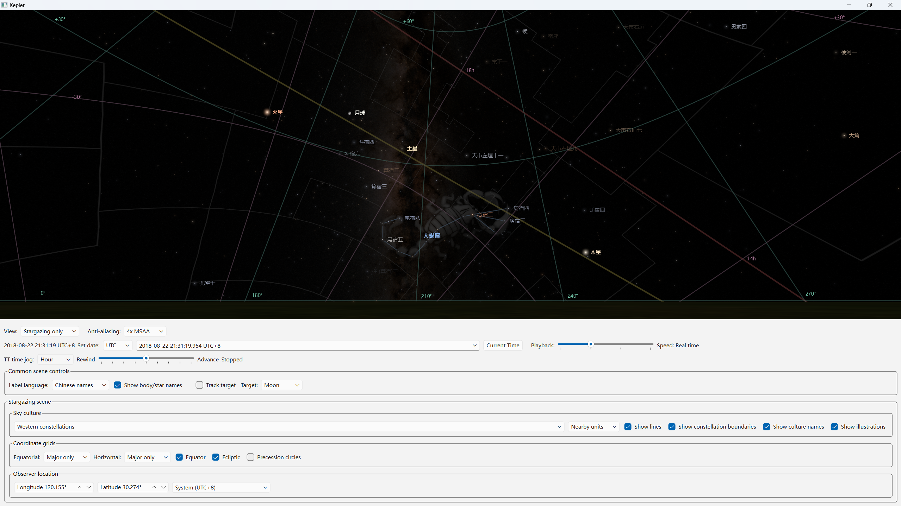
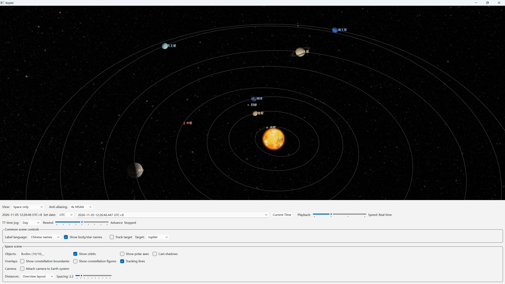
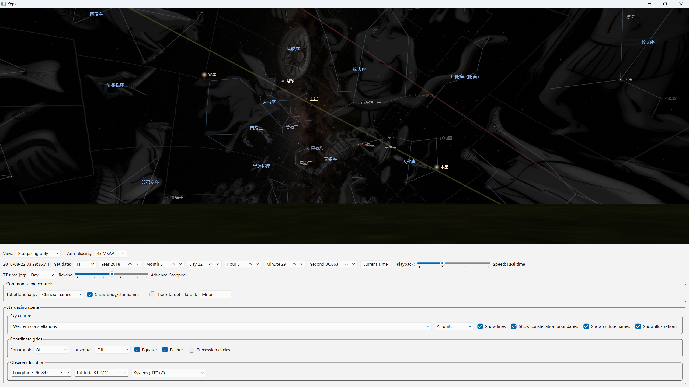
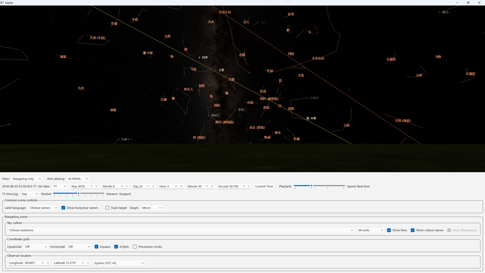
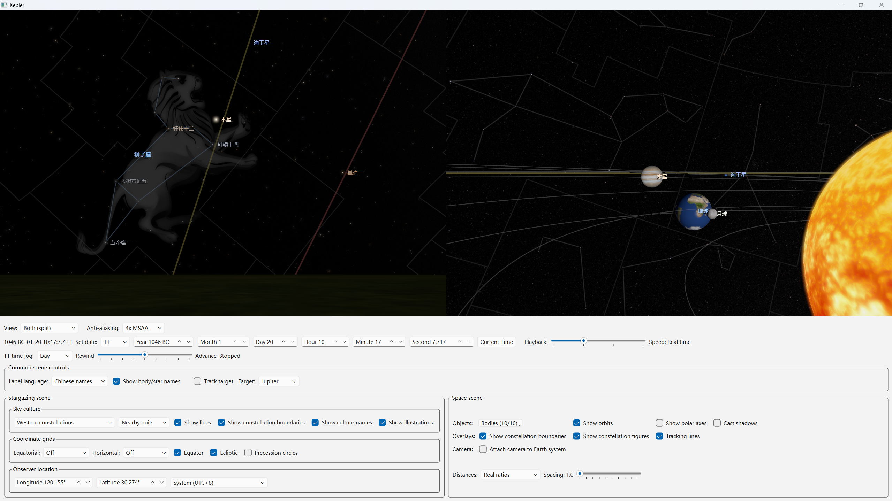
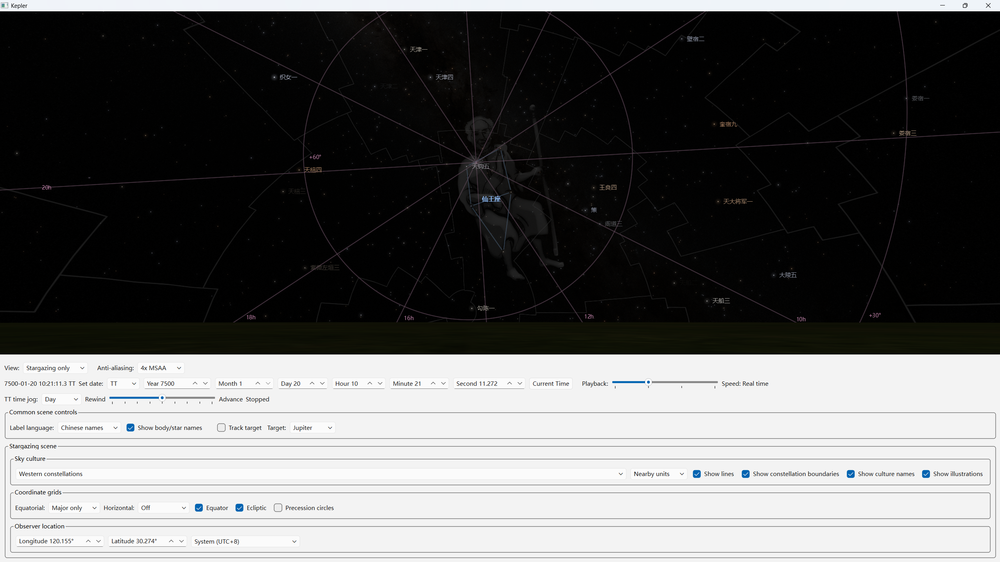

OVERVIEW
Kepler 综合演示
太阳系空间视图、地面观星视图与交互功能总览。
FEATURED · IN DEVELOPMENT
基于自研 OpenGL 渲染框架的交互式太阳系与地面观星可视化系统。
CURRENT FOCUS
OVERVIEW
Kepler 是一个以实时图形学学习为核心的个人项目。它提供太阳系空间视图、地面观星视图和双场景分屏模式，并将天体位置计算、星表检索、星座文化数据与实时渲染结合在同一套桌面应用中。
基础渲染框架由本人手动设计和实现；框架完成后，项目也成为一次持续的 Vibe Coding 实践。AI 参与了部分天文功能、Qt 界面、数据处理和跨模块重构，本人负责需求定义、架构决策、代码审查、调试、测试与最终验收。
VISUAL TOUR
由观察者经纬度构建地平参考系，叠加地面、天体、坐标网格与标签。

观察行星位置、轨道、极轴和地球参考系关系。

两个视口独立渲染，并按鼠标所在视口分发相机输入。
连线、名称、边界与插图支持附近触发和渐变。

在同一天球坐标基础上切换另一套文化表达。

以武王伐纣时期（公元前1046年）为例，观察岁星（木星）与鹑火星次（对应狮子座）的关系。

通过长期岁差观察北天极附近恒星角色的变化。

MOTION STUDIES
太阳系空间视图、地面观星视图与交互功能总览。
随太阳、地球和月球相对位置变化呈现月面受光状态。
观察地球极轴方向和北天极的长期移动。
观察行星在天球上的运动轨迹和在空间中的相对运动。
附近模式、逐段绘制与插图渐隐渐现。
根据投影像素半径，在远距离精灵和近距离纹理模型间交叉淡化。
在广角可见性与放大后的表面细节之间连续过渡。
DEVELOPMENT BOUNDARY
CORE CAPABILITIES
显示太阳、八大行星、月球、轨道、自转轴和环系统；支持真实距离与概览布局、自由空间相机及地球参考系附着。
根据观察者经纬度建立 Observer Frame，显示地面、恒星、太阳系天体、赤道、黄道、岁差圆和天球坐标网格。
支持 UTC / TT、实时与加速播放、日历单位推进，并可平滑锁定太阳、行星或月球。
通过 HYG、HEALPix 和视星等筛选绘制恒星；支持西方星座和中国星官的连线、名称、边界与插图。
包含 HDR、Bloom、深度立方体阴影、MSAA、多渲染队列、透明排序和屏幕空间抗锯齿宽线。
空间视图与观星视图可以独立或同时显示，各自维护投影、相机和渲染结果。
SYSTEM ARCHITECTURE
QT FRONTEND
VISUALIZATION
GRAPHICS · 自研渲染框架
OFFLINE TOOLS
DOMAIN DATA
领域模块不持有 OpenGL 对象；Visualization 负责将计算结果转换为可渲染场景状态。
| 模块 | 主要职责 |
|---|---|
graphics | 场景图、变换、网格、材质、着色器、纹理、帧缓冲、统一缓冲区、渲染状态与队列 |
astronomy | UTC / TT 时间、太阳系天体位置和姿态、视亮度、HYG 星表及 HEALPix 索引 |
skyculture | 西方星座和中国星官的名称、连线、边界及插图描述 |
visualization | 把天文状态映射到两个可视化场景，管理相机、动画、标签和显示策略 |
qt_frontend | 窗口、分屏输出、输入、模拟时间与图层控制面板 |
hyg_to_kepler | 将 CSV 星表转换为程序可直接加载的二进制数据 |
FRAME PIPELINE
RENDER QUEUES
IMPLEMENTATION NOTES
每个天体用独立节点表达平移、极轴方向、自转和视觉缩放。极轴与土星环只继承极轴方向，行星表面继续继承自转，避免把物理姿态和网格尺寸混进同一变换。
Opaque、Bloom、Sky、Transparent、Foreground 分别承担不同排序规则。地面使用独立前景投影，避免极小近裁剪面破坏整个场景的深度精度。
HDR 场景和 Bloom 提取写入不同附件；Bloom 经降采样和双向高斯模糊后合成。太阳阴影使用深度立方体贴图，球体边缘支持可选 MSAA。
独立工具把 HYG CSV 转换为二进制星表并建立 HEALPix 索引。运行时只查询视锥相交天区，再按 FOV 对应的极限星等筛选并实例化绘制。
行星位置采用 VSOP87A，月球采用 ELP/MPP02，天体姿态采用 IAU 模型。内部统一使用 J2000 TT 秒数，现代日期另支持 UTC 和闰秒转换。
空间视图提供真实距离与概览布局，并在切换时连续插值。地面观星视图分别映射距离和视觉尺寸，以保留真实角位置并让远处天体可见。
空间相机用四元数累计局部轴旋转；Observer Frame 由地球极轴、自转和观察者经纬度构建。跟踪控制器先平滑获取目标，再维持视线锁定。
三维候选标签投影到屏幕后，按优先级、亮度和矩形碰撞决定布局。附近模式使用进入/退出双阈值形成滞回，避免边界闪烁。
Kepler 的主要目标是学习实时图形学、场景组织和 AI 辅助软件开发，不是专业星历软件。轨道和姿态计算仍包含 TT / TDB 近似；地球自转未包含 UT1、章动、极移和历史 Delta-T 修正；参考轨道线也不表示瞬时密切轨道。因此，极端历史或未来日期适合观察长期趋势，不应作为高精度观测结果。